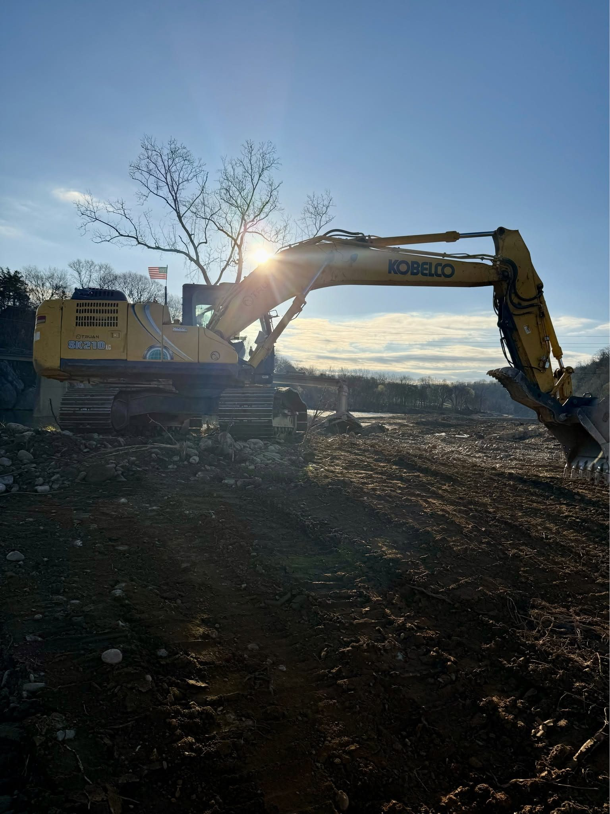
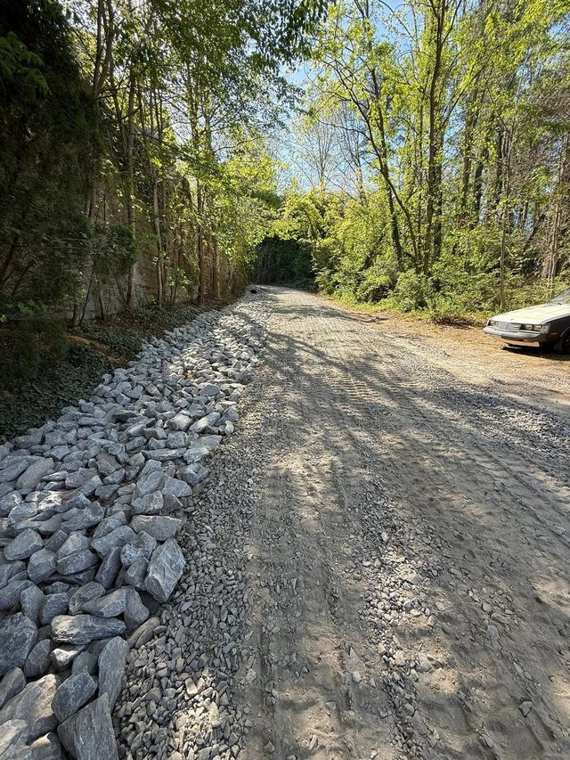
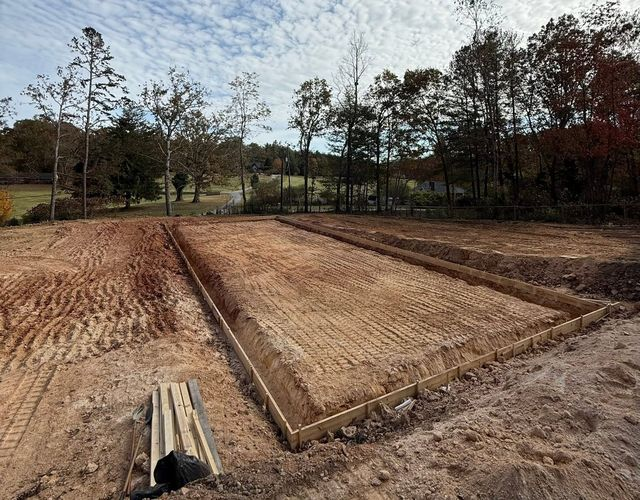
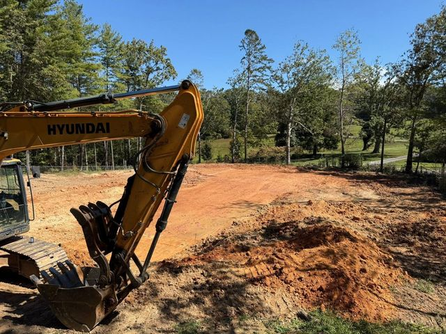
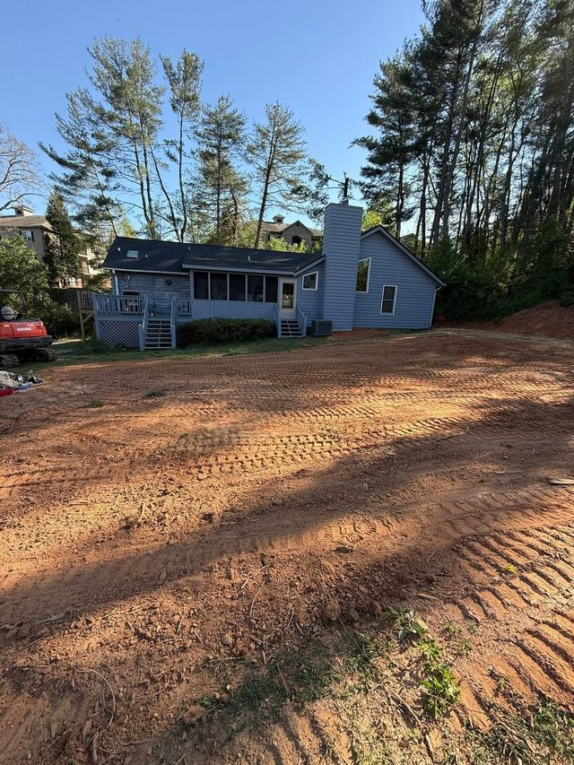
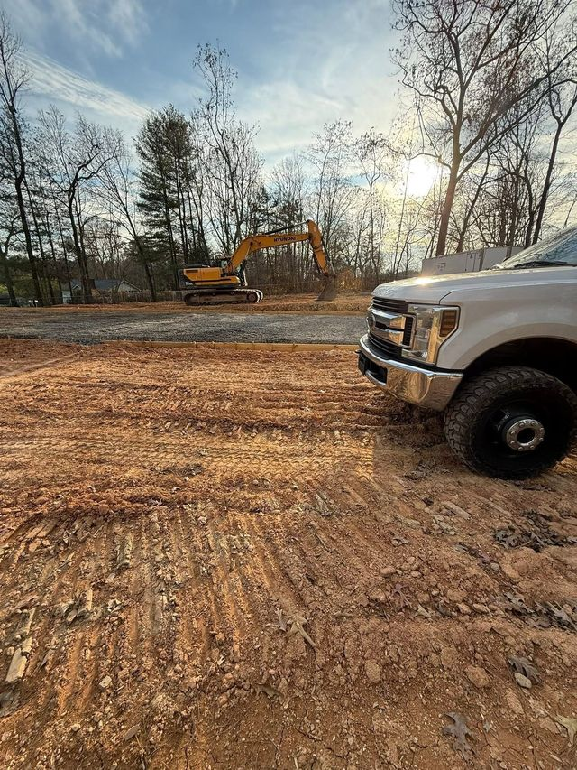
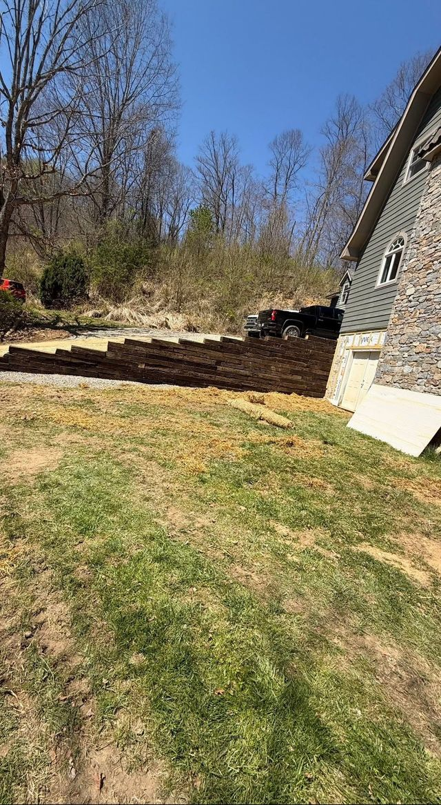

Land Grading & Leveling
Rough and final grade for yards, slopes, and building sites. We cut and fill to a plan — so water sheds where it should and the ground stays put.
You'll notice: No standing water. Clean lines. A yard you can actually mow.

Canton, North Carolina · Grading & Excavation
Land grading, excavation, and site prep across Haywood and Buncombe counties. Veteran-owned. Operator-run. Built for mountain ground.
What we do
Mountain ground doesn't forgive shortcuts. Steep access, red clay, and water always find the weak spot in a cheap job. We grade for the storm that's coming, not just the photo when we leave.
Rough and final grade for yards, slopes, and building sites. We cut and fill to a plan — so water sheds where it should and the ground stays put.
You'll notice: No standing water. Clean lines. A yard you can actually mow.
Footings, foundations, utility trenches, and full site prep for new builds. Dug to spec, benched safe, and ready for the next trade to walk on.
You'll notice: Your builder stops worrying about the dirt guy.
Brush, stumps, and grubbing — cleared and hauled, or mulched in place and returned to the ground. We open up the lot without tearing up what you're keeping.
You'll notice: You can finally see the land you bought.
New cuts, regrades, culverts, and proper crown on mountain grades. A driveway that holds through a WNC winter instead of washing into the creek.
You'll notice: You stop dreading the drive home in the rain.
Stormwater control, French drains, swales, culverts, and erosion control. Water is the enemy of every structure in these mountains — we give it somewhere better to go.
You'll notice: Dry crawlspace. Solid driveway. No more gullies.
Compacted, level pads cut into the hillside for homes, garages, barns, and shops — with the drainage planned before the first bucket of dirt moves.
You'll notice: Your concrete crew shows up and just pours.
Block, boulder, and timber walls that hold the hill back for good — built on footing we cut ourselves, sized for mountain loads and mountain water.
You'll notice: The slope stays where we left it.
Pads, footers, walks, and flatwork — poured on ground we prepped ourselves, so the concrete never has to argue with the dirt underneath it.
You'll notice: Flatwork that stays flat, because the base was right.
Tear-downs, haul-offs, and storm-damage cleanup — washouts, downed timber, flood debris. When the mountain makes a mess, we make it ground again.
You'll notice: The problem's gone and the site's clean.
If it involves a machine and dirt in Haywood or Buncombe County, we either do it right — or we'll tell you who can.
The Viking Standard
When we say we'll be there, we're there. If weather moves the schedule, you hear it from us first — not from an empty driveway.
You get a real number after a real site walk. No mystery line items, no surprise change orders for things we should have seen.
Water tells the truth about dirt work. We grade for the next ten storms, and we stand behind the finish.
Tools up, site tidy, every day we're on your property. You're living there — we don't forget that.
Proof in the dirt
Real jobs across the western North Carolina mountains — grading, site prep, driveways, drainage, and pads. Full gallery below.






The man behind the machine
Jon learned discipline in uniform, nerve in the rodeo arena, and respect for a mountain on a snowboard. After more than ten years in the excavating and construction industry, he put his own name on the door — grading western North Carolina ground for the people who live on it.
He's a husband and a family man building a company his kids can be proud of. When Viking Grading takes your job, Jon is the one on the machine.
Jon and his wife — Canton, NC.
Word of mouth
Our word is simple: show up, grade it right, leave it clean. The neighbors are starting to say the same.
First reviews are coming in now — read them straight from the source.
Read our reviews on Facebook[ Paste a real customer review from the Facebook page here — keep their exact words. ][Customer name][Town, NC]
[ Paste a real customer review from the Facebook page here. ][Customer name][Town, NC]
[ Paste a real customer review from the Facebook page here. ][Customer name][Town, NC]
Where we work
Based in Canton, working the mountain towns around it. Steep lots, tight access, and long gravel drives are our home field — not a surcharge.
Ready when you are
Tell us what the water's doing, what the lot looks like, and what you want it to become. We'll walk it with you and give you a straight number.
Estimates are free on-site walk-throughs.